|
 |
 |
Puntos de
Inflexión Ecológica
- Cómo funcionan?
- Transformando círculos viciosos a círculos virtuosos
- Ingredientes para el éxito
- Elaboren sus propios Puntos de Inflexión Ecológica
Historias por Región
Historias por Tema
- Agricultura
- Agua y Cuencas
- Bosques
- Ecosistemas Urbanos
- Educación
- Energía
- Negocios
- Pesquerías
- Salud Pública
Videos Cortos
- Salvando un arrecife coral y una pesquería
(Filipinas) - Revitalizando vecindades urbanas con jardines comunitarios
(Nueva York) - Revirtiendo la deforestación tropical con bosques comunitarios
(Thailandia) - Rellenando aguas subterráneas con captación pluvial
(Rajastán, India) - Escapando la trampa de pesticidas
(India)
Explicando el Éxito
- Salvando un arrecife coral y una pesquería
(Filipinas) - Revitalizando vecindades urbanas con jardines comunitarios
(Nueva York) - Revirtiendo la deforestación tropical con bosques comunitarios
(Thailandia) - Rellenando aguas subterráneas con captación pluvial
(Rajastán, India) - Escapando la trampa de pesticidas
(India)

Ecología Humana: Presenta los principios de la ecología humana que sirven de fundamento a los Puntos de Inflexión Ecológica
Tailandia - Provincia Nakhon Sawan - Restauración de Cuencas Hidráulicas con Agrosilvicultura y Gestión Forestal Comunitaria
- Breve: La adopción de la agrosilvicultura y la gestión forestal comunitaria habilitó a aldeanos pobres en la optimización de sus recursos, tanto naturales como humanos.
- Lea la historia detallada
- Fotos tomadas por Amanda Suutari - Todas las fotos están disponibles para descargarse gratis; favor de atribuir a la fotógrafa y al sitio de Internet.
- Pulse sobre la foto para ver los detalles.

Community leaders

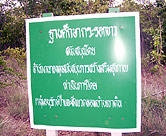
Community forest sign

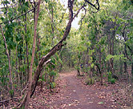
In the community forest

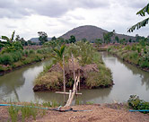
Irrigation pond

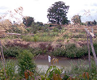
Aquaculture

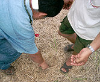
Mulch on the soil

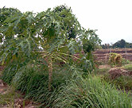
Papaya tree

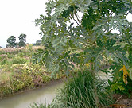
Pond bank

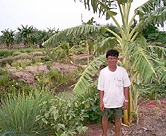
Thanawm Chuwaingan

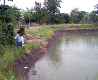
Watching fish

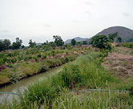
Farm panorama

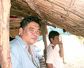
Under the shelter

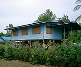
Chuwaingan's home

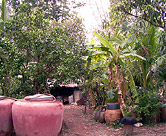
'Kitchen garden'

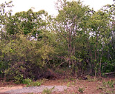
Forest path

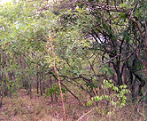
Community forest

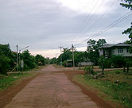
Phai Sali village road

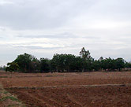
From the road

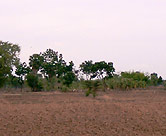
Another view of above

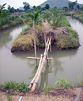
Bridge to 'island'

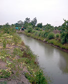
'Island' bank

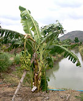
Banana tree